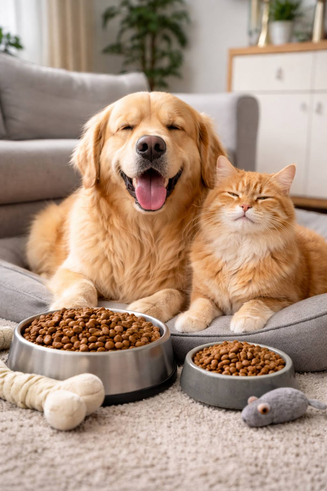

Доброта в Некрасовке! Поможем бездомным хвостикам вместе! В нашем районе есть те, кто нуждается в нашей заботе и внимании - это бездомные кошки и собаки,которые находятся в приюте для животных Некрасовка, в численности более 3000 собак и около 500 кошек. Они тоже хотят быть сытыми, здоровыми и любимыми. И мы можем им помочь! Объявляем благотворительную акцию в поддержку бездомных животных! Мы приглашаем всех неравнодушных присоединиться к нашей инициативе. Вместе мы сможем сделать жизнь этих пушистых и хвостатых обитателей нашего района чуточку лучше. В приют принимается корм сухой , влажный , игрушки, поводки, ошейники , миски , одноразовые пеленки, кошачий наполнитель , лотки, когтеточки , витамины и препараты против паразитов.
📍 Место сбора:
[территория школы / школьный двор / центральный вход в школу]
🕘 Время и даты проведения:
[указать]